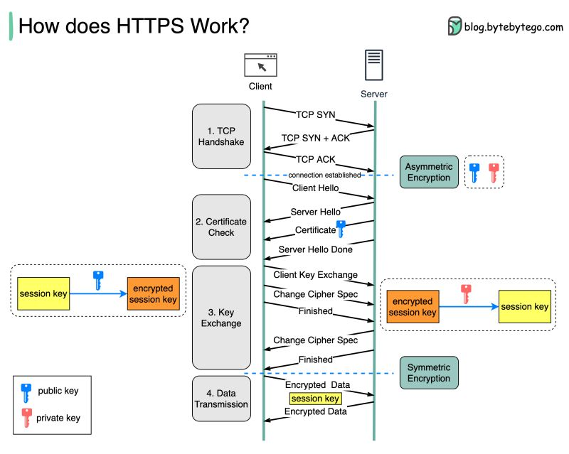

Networking¶
- Introduction
- CIDR subnets
- HTTP Protocols
- Container Networking
- Azure
- Load Balancing
- DNS
- Images
- Tweets
Introduction¶
- networkwalks.com: TCP/IP Model
- devopscube.com: IP Address Tutorial For Beginners [IPV4 and IPV6 Protocols]
- medium.com/javarevisited: 5 Best HTTPS, SSL and TLS Courses for Beginners in 2022 These are the best online courses to learn about HTTPS, SSL, and TLS for programmers and developers in 2022
- blog.coderco.io: TCP Fundamentals for Software & DevOps Engineers: Building a Strong Foundation in Networking
CIDR subnets¶
- ==cidr.xyz== 🌟 An interactive IP address and CIDR range visualizer
- magic-cookie.co.uk/iplist.html Convert CIDR notation to a range of IP addresses
- https://en.wikipedia.org/wiki/Classful_network
- gist.github.com: chadmcrowell/cidr.sh 🌟
- ==opensource.com: A Linux networking guide to CIDR notation and configuration - sipcalc== 🌟
- pbxbook.com: CIDR Cheat Sheet
- aelius.com: subnet sheet
- networkproguide.com: CIDR Subnet Mask Cheat Sheet
- wisc.edu: CIDR Conversion Table
- dzone: What Is CIDR (Classless Inter-Domain Routing)
- cyberciti.biz: Linux: IP Subnet (CIDR) Calculator That Will Help You With Network Settings
- cyberciti.biz: Linux Calculating Subnets with ipcalc and sipcalc Utilities
- tecmint.com: How to Calculate IP Subnet Address with ipcalc Tool
- awesomeopensource.com: The Top 110 Cidr Open Source Projects on Github 🌟
- matt-rickard.com: How to Calculate a CIDR
- build5nines.com: IPv4 Address CIDR Range Reference and Calculator
IPAM Tools. NetBox IPAM¶
- ==github.com/netbox-community/netbox== 🌟
- netboxlabs.com: An In-Depth Guide to NetBox for IPAM
- youtube: NetBox Zero To Hero
- https://hub.docker.com/r/netboxcommunity/netbox
- docs.ansible.com: Netbox Ansible Modules 🌟
HTTP Protocols¶
HTTP Status Codes¶
HTTP/2¶
- Wikipedia: HTTP/2
- SPDY & HTTP 2 with Akamai CTO Guy Podjarny
- cURL mantainer: http2 explained 🌟
- cURL mantainer: curl and HTTP/2 by default
- cURL mantainer: A 2015 retrosprective
- http2.github.io HTTP/2 🌟
- http2.github.io HTTP/2 Frequently Asked Questions 🌟
- HTTP/2 resources
- A Simple Performance Comparison of HTTPS, SPDY and HTTP/2 🌟
- blog.cloudflare.com - Tools for debugging, testing and using HTTP/2
- blog.cloudflare.com - HTTP/2 For Web Developers
- HTTP/2 With JBoss EAP 7 - Tech Preview
- simple-talk.com: Script Loading between HTTP/1.1 and HTTP/2
- 5 Tips to Boost the Performance of Your Apache Web Server
HTTP/3¶
- Wikipedia: HTTP/3
- ==http3-explained.haxx.se: HTTP/3 explained== 🌟
- alexandrehtrb.github.io: HTTP/2 and HTTP/3 explained
HTTP Structured Fields¶
Container Networking¶
- Private Link Reality Bites: Service Endpoints vs Private Link - (Related to kubernetes-networking topic)
Azure¶
- Which Azure Network is Cheaper? - (Related to azure topic)
- Manage Azure IPAM with Terraform - (Related to azure topic)
- Deploying Virtual Networks Across Tenants Using Azure Virtual Network Manager - (Related to azure topic)
- Introducing Subnet Peering in Azure - (Related to azure topic)
- Reduce Latency with Azure Proximity Placement Groups - (Related to azure topic)
- Building a DDoS Response Plan with Azure DDoS Protection - (Related to azure topic)
- Azure ExpressRoute Resiliency: Best Practices for Production-Critical Workloads - (Related to aws-networking topic)
- Application Network Security in Azure Subnets, Endpoints, DNS, NSGs with Terraform Code - (Related to azure topic)
- Azure Products by Region Table - (Related to azure topic)
- Hub-Spoke Network Topology in Azure - Azure Architecture Center - (Related to azure topic)
- Azure Network Security Perimeter Concepts - (Related to azure topic)
-
A Guide to Azure Data Transfer Pricing - (Related to azure topic)
-
iximiuz.com: Container Networking Is Simple! 🌟
- How to virtualize network resources to make containers think each of them has a dedicated network stack?
- How to reach the outside world (e.g. the Internet) from inside the container?
Load Balancing¶
-
NFTables mode for kube-proxy in Kubernetes - (Related to kubernetes-networking topic)
-
harshityadav95.medium.com: Load Balancing Layer 4 vs Layer 7
DNS¶
- ==media.pearsoncmg.com: Recursive/Iterative Queries in DNS== In Chapter 2 of the text the authors give examples of recursive and iterative DNS queries. This DNS interactive animation animates additional combinations of iterative and recursive queries among four name servers.
Images¶
Click to expand!

Tweets¶
Click to expand!
List of HTTP Status Codes Cheat Sheet: pic.twitter.com/1m8gci63Vs
— Java Guides (@GuidesJava) December 26, 2022
IPv4 vs IPv6 pic.twitter.com/mZnHL3E8Zu
— LetsDefend (@LetsDefendIO) February 24, 2023
/1 Which HTTP status codes are most common?
— Alex Xu (@alexxubyte) March 22, 2023
The response codes for HTTP are divided into five categories:
Informational (100-199)
Success (200-299)
Redirection (300-399)
Client Error (400-499)
Server Error (500-599) pic.twitter.com/39I34KqQoU